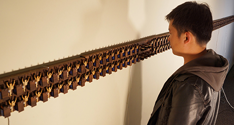
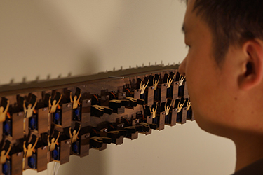
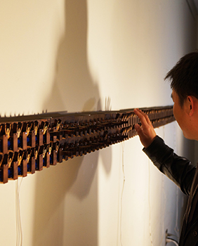
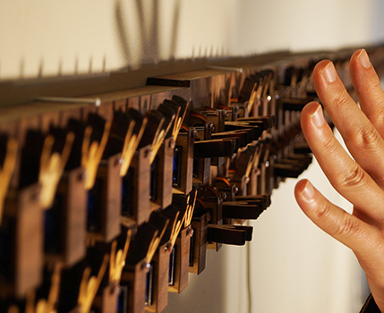

2013, Jan


 
In the small room, Hooray, an interactive installation, is installed on three walls with a video installed on the fourth wall. There is one bright light source in the middle of the room to make participants’ shadows for interacting with Hooray. In Hooray, 208 human figures in double rows are initially standing up. When participants approach Hooray, the figures individually bow. To accomplish this effect, when the participants’ shadows block light sensors, motors are activated that cause the figures to bow. In my video, I bow and try to keep smiling for 10 minutes while gradually getting tired of bowing.
Hooray represents a hierarchical (power) relationship in society. When participants get closer to Hooray, their shadows seem like overwhelming small-scaled human figures. Small-scaled human figures bow showing their obedience to the participants. I think our society’s so called democracy is not really a democracy. An individual’s money, power, and reputation are still organized in a hierarchy. We do not live any more in a society, which is set up as a relationship of servant and master, such as a caste or a slavery system. However, the current system is sometimes subtly misguiding people through mass media, policy, or laws because they opt to represent people who have power and influence. At the same time, in my video, an Asian Woman bows and keeps smiling for 10 minutes. The video specifically represents Asian culture, which expects woman to be nice and be submissive. Hooray represents a general concept of a hierarchical society with the video showing a specific example of Asian culture as two works in a set.
I would like to see the audiences’ reactions that occur when they encounter hierarchies of different societies and cultures. I assume that they may feel uncomfortable, curious, or indifferent. My greatest hope is for my audience to become aware of our society’s issues and have a chance to think about it while they appreciate and enjoy the artwork.
Funding: Next Generation Design Leadership Program (Ministry of Knowledge Economy in Korea)
Director: Hye Yeon Nam
Hardware Consultant: Yaesuk Jeong
Exhibition
2012 Jan-April, "Unexpected Behaviors" Telfair Museum, Savannah, GA
2011 Oct-Dec, "Touching Anomaly" Buffalo Arts Studio, Buffalo, NY (Framed Version)